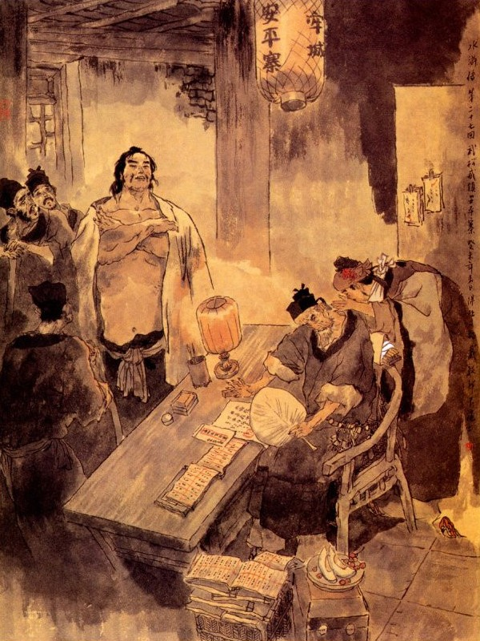
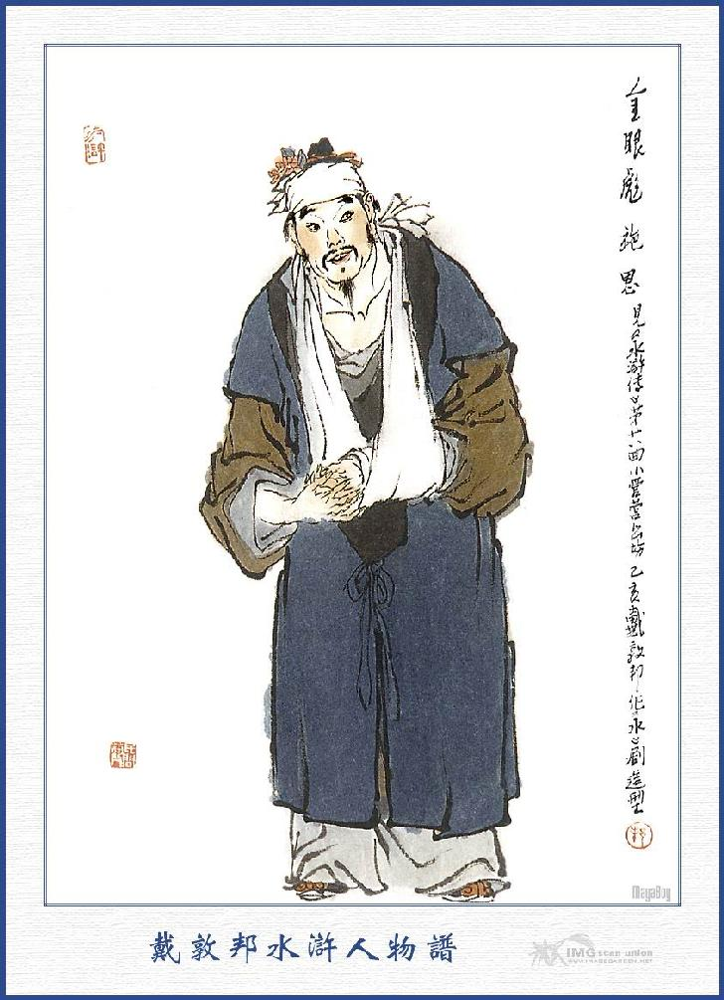
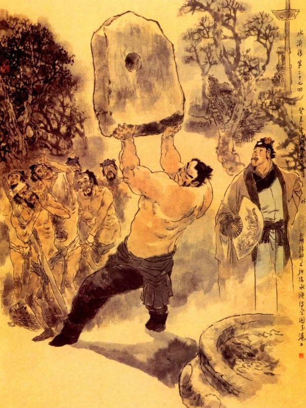

Khi đó Trương Thanh nói với Võ Tòng rằng:
- Việc này không phải là chúng tôi có bụng gì ngăn trở, song chỉ e khi Đô Đầu đến đất Mạnh Châu tất nhiên bị nhiều điều khổ nhục, vậy bất nhược đem hai tên công sai này giết đi rồi Đô Đầu ở tạm đây ít bữa. Nếu sau Đô Đầu có chịu đi lạc thảo thì tôi xin thân hành đưa ngài sang Nhị Long Sơn, ở với Lỗ Trí Thâm cũng được, ngài nghĩ sao?
Võ Tòng đáp rằng:
- Huynh trưởng có lòng tốt nghĩ đến tôi như vậy, thực là cảm tạ vô cùng. Duy tính tôi xưa nay chỉ quen đánh giết những kẻ chướng ác ở đời, còn như hai tên công sai này thì họ đối với tôi rất là tử tế, tôi xem ý không phải là đứa xằng, không lẽ nào mà mình lại nỡ hại đi được. Nếu Huynh trưởng có lòng yêu tôi thì xin cứu hai tên ấy vậy, không nên giết hại người ta.
- Đô Đầu đã là bậc trọng nghĩa như vậy, chúng tôi cũng không lẽ nào dám làm trái lương tâm của ngài.
Trương Thanh nói đoạn, liền gọi người nhà, dựng hai tên công sai dậy rồi Tôn Nhị Nương pha thuốc giải độc đổ vào cho hai người uống. Được một lúc hai anh kia như người mơ màng trong giấc chiêm bao rồi bầng mắt ngồi dậy, nhìn Võ Tòng mà nói rằng:
- Chết nỗi! Sao tôi nằm say ở đây? Ta nhớ lấy nhà này, để lần sau về, lại đến đây uống rượu.
Mọi người nghe nói, ai cũng ôm bụng cười mà không nhịn được. Bấy giờ Trương Thanh sai người nhà đi giết gà vịt làm cơm, dọn ra dưới giàn nho, để thiết Võ Tòng cùng hai người công sai. Võ Tòng nhường hai tên công sai ngồi trên mà mình thì ngồi đầu dưới với Trương Thanh còn Tôn Nhị Nương thì ngồi một bên mạn bàn, uống rượu với nhau rất là vui vẻ. Trương Thanh sai lấy đôi khẩu giới đao đưa cho Võ Tòng xem, quả nhiên là một thứ sắt tốt, có tuyết hoa rực rỡ, thực là hiếm thấy xưa nay. Đoạn rồi cùng nhau kể chuyện giang hồ, đôi bên đều lấy làm thú vị. Võ Tòng lại đem chuyện Tống Công Minh là người hào hiệp thế nào mà hiện nay đương ở nhà Sài Đại quan nhân, kể cho Trương Thanh nghe một lượt. Hai tên công sai nghe thấy chuyện thì chỉ ngây người lặng tiếng rồi bái lạy không thôi. Võ Tòng liền bảo với hai người rằng:
- Các bác có lòng tử tế, trông nom cho tôi, trong khi đi đường, nay không lẽ nào đem lòng giết hại. Chúng tôi kể chuyện bọn giang hồ hảo hán với nhau, các bác cứ việc uống rượu, không có điều chi mà sợ.
Sáng hôm sau Võ Tòng từ tạ xin đi. Trương Thanh nhất định không nghe lưu lại ở đó luôn ba bốn hôm để khoản đãi. Võ Tòng nhân cảm thấy lòng hậu đãi của vợ chồng Trương Thanh, liền xin kết làm anh em, Trương Thanh hơn Võ Tòng chín tuổi, nên bái nhận Võ Tòng làm em.
Khi Võ Tòng sắp sửa ra đi, vợ chồng Trương Thanh lại làm tiệc tiễn hành rồi đưa ra mươi lạng bạc để tặng Võ Tòng và lấy ít tiền tiễn hai tên công sai nhân thể. Võ Tòng cảm tạ lòng thành rồi cùng nhau bái biệt vợ chồng Trương Thanh mà đi sang Mạnh Châu.
Trưa hôm ấy đi đến Mạnh Châu, hai tên công sai giải Võ Tòng vào trong phủ. Quan phủ phê nhận công văn, giao cho hai tên công sai trở về phủ Đông Bình, còn Võ Tòng tống cho xuống trại. Tên lính dong Võ Tòng xuống trại, thấy trước cửa có cái bảng đề ba chữ "Bình An Trại" rất lớn. Khi vào đến phòng trại con con thì thấy mấy người cùng tụi tù đồ, đến mà bảo với Võ Tòng rằng:
- Đại hán mới đến đây, nếu có tiền nong thư tín gì thì cầm ra tay để một lát nữa đưa cho Sai Bát, kẻo một trăm trượng ra oai, không phải là vừa đâu.
Chúng tôi thấy Đại hán cũng một tình cảnh như chúng tôi nên nghĩ lòng thỏ tử hồ bi mà bảo cho hảo hán biết trước, liệu kiếm chi mà đút lót ngay đi thì mới khỏi trăm trượng ra uy kia được.
Võ Tòng nói:
- Vâng, các ông bảo thế tôi xin cảm ơn, tôi đây cũng có ít tiền hễ họ tử tế thì tôi đưa ngay, bằng họ lại ậm oẹ bướng bỉnh thì một đồng tôi cũng không mất làm gì.
Chúng lại nói:
- Hảo hán ơi! Không nói thế được! quan xa bản nha gần, mình đã có tội đến đây, không lụy người ta không được.
Vừa nói đến đó thì đã có người nói rằng:
- Sai Bát quan nhân đã đến.
Chúng nghe nói đều lảng vảng chạy mất hết. Võ Tòng bèn cởi khăn gói rồi ngồi xuống đó. Bấy giờ một người chạy vào hỏi tên rằng:
- Anh nào là tù đồ mới đến đây?
Võ Tòng đáp lên rằng:
- Chúng tôi đây.
Người kia nói:
- Thằng này người như thế mà lại đợi ta phải nói à? Mày là một hảo hán đánh hổ ở núi Cảnh Dương, đã làm qua chức Đô Đầu, tưởng là hiểu việc thì phải. Mày đã đến đây, lại không biết ta là Sai Bát à?
Võ Tòng cười nhạt mà đáp rằng:
- A? Thằng này lại đến đây mà lôi thôi chực để lão gia biếu tiền hay sao? Gọi là một chữ đây cũng không mất. Đây chỉ có một ít quả đấm thanh tịnh, có thì ta đãi một đôi. Còn tiền ta để đánh chén, xem mày định làm gì? Chỉ có một lẽ là mày lại đem tao về huyện Dương Cốc là cùng.
Sai Bát nghe nói cả giận quay ngoắt đi ra. Bấy giờ bọn tù đồ kia lại chạy vào bảo với Võ Tòng rằng:
- Chết nỗi? Hảo hán cự với lão ta, thế thì chốc nữa sẽ khổ. Bây giờ lão ta đến nói với Quản Doanh, tất lại định hại tính mạng chứ không chơi.
Võ Tòng điềm nhiên mà rằng:
- Không sợ! Mặc xác họ muốn gì thì làm văn giở văn, võ giở võ chứ sao?
Đương khi xao xác chuyện trò thì thấy ba bốn tên lính chạy đến gọi lên rằng:
- Tù mới là Võ Tòng đâu?
Võ Tòng đáp:
- Lão gia ngồi đây, có chạy đâu mất mà làm ầm lên thế?
Bọn lính xông vào lôi thốc Võ Tòng lên nhà điểm tù. Khi tới nơi thấy Quản Doanh ngồi tên sập rồi có năm sáu tên giải Võ Tòng lên. Quản Doanh sai tháo gông ra rồi truyền rằng:
- Tên tù kia, ngươi đã biết cựu chế vua Thái Tổ Vũ Đức Hoàng Đế khi xưa, phàm các đứa phạm tội tù đồ, trước hết phải đánh trăm trượng ra oai đã. Lính đâu đem đánh mau.
Nói dứt lời thì tụi lính nhâu nhâu túm đến, toan lôi trói để đánh.
Võ Tòng nghiễm nhiên bảo chúng rằng:
- Không cần gì chúng bay phải mó tay vào ta, đánh thì cứ đánh cũng không cần phải trói giữ, nếu ta có tránh một roi nào, không kể là tay hảo hán đánh hổ mà xóa cả mấy roi trước, lại đánh bắt đầu từ một trở đi. Nếu ta có kêu một tiếng cũng không phải là thằng con trai giỏi làm việc ở đất Dương Cốc. Mọi người đứng đó nghe thấy vậy đều cười rằng:
- Thằng xuẩn hán muốn chết, để xem nó làm ra sao?
Võ Tòng tiếp luôn rằng:
- Muốn đánh thì cứ đánh cho hết sức, đừng nể nang một roi nào, đây không thích thế.
Những người đứng xem chung quanh đều cười ầm cả lên. Đoạn rồi một tên lính vác côn vào xin phép ra roi.

Chợt đâu có một người đứng ở đằng sau Quản Doanh, mình cao sáu thước tuổi ngoài đôi mươi, trên nét mặt trắng, ba nhánh râu thưa, đội khăn tay trắng, mặc áo sa xanh, tay quấn dải lụa trắng, ghé vào tai Quản Doanh nói thì thầm mấy câu. Đoạn rồi thấy Quản Doanh truyền rằng:
- Tên tù mới kia? Ngươi đi đường bị bệnh gì đó?
Võ Tòng đáp rằng:
- Không có bệnh gì cả, uống rượu tốt, thịt nuốt được, cơm ăn được, đi đường cũng được.
Quản Doanh lại nói:
- Tên này chắc là bệnh mới khỏi, ta nom mặt chưa được khoẻ thì phải, thôi hãy gửi cho một trăm trượng đó.
Bấy giờ tụi lính đứng hai bên đều bảo Võ Tòng rằng:
- Tướng công đã có lòng thương thế, anh cứ nói là đương yếu có được không?
Võ Tòng nói:
- Ta không đau yếu gì, cứ đánh luôn cho xong đi, chịu đựng lôi thôi thêm bận ruột, bao giờ cho trả được xong?
Các người kia đều cười không nhịn được. Quản Doanh cũng cười mà nói rằng:
- Chắc anh này bị bệnh nhiệt mà không ra được mồ hôi, nên mới nói lảm nhảm như thế? Thôi không cần nghe hắn nói, hãy cứ đưa xuống dưới phòng trại giữ ở đó.
Mấy tên lính dạ ran rồi mang Võ Tòng xuống phòng trại, bấy giờ bọn tù đồ đều đến hỏi Võ Tòng rằng:
- Bác có thư tín của ai đưa đến, để nói với Quản Doanh che chở cho không?
Võ Tòng đáp:
- Không có gì cả.
- Nếu vậy họ không đánh bây giờ, tất là nguy với họ. Chắc là họ toan sát hại chứ không chơi.
- Họ sát hại bằng cách nào?
Chiều hôm nay tất họ đưa mấy bát cơm gạo trong kho đến, để bác ăn cho rõ no rồi họ đem xuống hầm đất trói tròn lại, lấy chăn bó cuộn vào mà đút nút chặt lỗ mũi lỗ mồm mà dựng lên vách chỉ một lúc là chết.
- Còn có phép gì nữa không?
- Còn một cách nữa là họ đem trói lại rồi đem một cái túi rất lớn để đè lên người cũng chỉ một lúc là chết.
Võ Tòng lại hỏi:
- Vậy còn cách gì nặng hơn nữa không?
Chúng đáp rằng:
- Chỉ có hai cách ấy là ghê nhất, còn các lối khác thì không lấy gì làm nguy hiểm cả.
Chúng vừa nói xong thì bỗng thấy một tên lính mang cái quả tròn đến mà hỏi rằng:
- Ai là Võ Đô Đầu mới đến ở đây?
Võ Tòng đáp rằng:
- Ta đây, hỏi làm gì?
Người lính nói:
- Quản Doanh sai tôi đưa đồ đến đây cho điểm tâm.
Nói xong đem quả tròn đến để trước mặt Võ Tòng, Võ Tòng trông thấy có một bình rượu lớn, một đĩa thịt, một đĩa bánh và một bát nước dùng lớn liền nghĩ thầm trong bụng rằng: "Cái này nó mang cho ta ăn rồi mang trị đây! Ừ thôi, hãy ăn rồi sẽ liệu".
Nghĩ vậy, liền vớ lấy bình rượu uống một hơi vừa hết rồi ăn uống các thứ, không còn một tý gì. Đoạn rồi tên lính bưng quả mang đi. Võ Tòng ngồi một mình trong phòng vừa nghĩ vừa cười nhạt một mình mà nói lẩm bẩm: “Để xem nó đối với ta là người thế nào?”
Chiều hôm ấy lại thấy tên lính kia đội một quả đến. Võ Tòng hỏi:
- Sao anh lại đến đây làm gì?
Tên lính đáp:
- Tôi đưa cơm chiều đến đây.
Nói đoạn tay đặt cái quả xuống, trong bày một đĩa thịt, một bát canh cá, một thùng cơm và hai nai rượu rất lớn.
Võ Tòng ngất ngưỡng vừa ăn vừa thầm nghĩ một mình: "Ăn xong bữa này, tất là họ kết liễu mình, nhưng vậy mặc lòng, ta có chết cũng làm con ma no mới thích". Ăn uống xong rồi, tên lính thu dọn bát đĩa mà trở đi không nói năng chi cả.
Hồi lâu lại thấy tên lính ấy, cùng một tên nữa, kẻ xách thùng tắm kẻ thì xách thùng nước nóng, đem vào bảo với Võ Tòng rằng:
- Nước đây mời Đô Đầu đi tắm rửa.
Võ Tòng lấy làm lạ: “Có lẽ họ cho mình tắm rồi mới hạ thủ hay sao? Thế nào cũng không cần, ta hãy tắm cái đã.”
Nghĩ đoạn cởi quần áo, nhảy vào thùng nước tắm rửa một lúc, hai tên lính lại đưa khăn tắm vào để lau. Võ Tòng lau ráo mình mẩy mặc quần áo vào rồi, hai tên kia đổ nước, đem thùng vác về.
Đoạn rồi một anh đem màn chiếu đến, để mắc màn trải chiếu và đưa gối cho Võ Tòng nằm. Võ Tòng đóng cửa nằm một mình không hiểu ý tứ ra làm sao? Hồi lâu bất giác người mệt ngủ thiu đi lúc nào không biết.
Cuộc đời trải chán bể dâu,
Tử sinh kinh cụ hơi đâu bận lòng?
Giang sơn phó một giấc nồng,
Xem trời xoay với anh hùng ra sao?
Sáng hôm sau chàng trở dậy, vừa mới mở cửa ra, đã thấy tên lính bưng nước nóng cho Võ Tòng súc miệng rồi lại đem lược vào chải đầu búi tóc cho Võ Tòng. Lại có một người nữa bưng cơm sáng vào mời Võ Tòng ăn. Võ Tòng vừa ăn vừa nghĩ lẩm nhẩm buồn cười, không hiểu tình ý ra sao cả. Khi cơm nước xong, có một người vào nói với Võ Tòng rằng:
- Ở đây không được sạch sẽ, xin mời Đô Đầu sang phòng kia để nghỉ.
Nói xong liền dọn dẹp hành lý và dẫn Võ Tòng đi. Võ Tòng càng lấy làm ngờ vực lạ lùng, xong cũng liều bước đi theo, để xem trò đời hay, dở? Đi tới một nơi, đẩy cửa bước vào thấy ở trong màn giường sạch sẽ, hai bên bàn ghế, toàn là mới kê bày cả.
Võ Tòng bước chân vào, trong lòng ám tưởng: “chắc phen này họ đút mình vào hầm đất thì phải. sao mà lại dắt đến đây?” Chàng vẩn vơ nghĩ ngợi, ngồi mãi đến gần trưa, lại thấy tên lính bưng một mâm lớn tướng, tay xách một nậm rượu đưa vào, trong mâm bày đủ các thức hoa quả, thịt cá rất là sang trọng rồi tên lính rót rượu mời Võ Tòng uống. Võ Tòng ăn uống no say rồi nghĩ thầm rằng: "Đám tù vừa nói với ta như vậy, ta cũng chắc rằng như vậy, ngờ đâu họ lại xử ngay một cách khác hẳn, khiến mình không biết xét đoán ra sao mà xử trí!” Đoạn rồi chàng thủng thẳng đi ra chơi mát trong trại. Bấy giờ đương dạo tháng sáu, trời nắng chang chang, bọn tù đồ kẻ thì gánh nước, kẻ thì bổ củi, nhất luật đều phải phơi trải ngoài sân mà làm các việc. Võ Tòng thấy vậy, liền hỏi chúng rằng:
- Trời nắng nôi thế này, các người vội gì mà phơi mãi ra đấy cho khổ?
Chúng nghe nói cười mà đáp rằng:
- Bác không biết, chúng tôi được làm việc ở đây, còn là phúc bằng cái đình ấy. Bây giờ còn có những hạng kém tiền đút lót thì nhốt cả vào trong Đại lao kia rồi khóa kìm cùng kẹp, sống cũng dở chết cũng dở, lấy đâu đã được thế này.
Chàng nghe vậy, lặng ngắt mà quay đi, khi tới phía sau Thấy đôn đá rất to, bên cạnh có lỗ thủng, chắc là một chỗ để trói buộc người ta. Chàng liền ngồi trên đó để ngủ. Hồi lâu lại một mình lững thửng về phòng. Từ đó trở đi, luôn ba bốn hôm, bữa nào cũng có người đưa cơm rượu đến mà hầu hạ cung phụng rất là tử tế, Võ Tòng không hiểu ra sao. Một hôm vào giữa buổi trưa, nhân khi có người mang cơm đến, Võ Tòng liền hỏi rằng:
- Anh là người nhà ai? Sao lại mang cơm rượu đến mời tôi vậy?
Người kia nói:
- Thưa ngài, hôm nọ tôi đã nói với ngài rằng:
- Tôi là người nhà Quản Doanh tướng công đó.
- Tôi hãy hỏi anh, ai sai anh đem cơm rượu cho tôi như vậy?
- Thưa ngài, đây là tiểu Quản Doanh tướng công, sai tôi đưa đến để mời ngài.
- Tôi là một người phạm tội, xưa nay chưa từng quen biết Quản Doanh bao giờ, vậy cớ sao lại đã tôi tử tế như vậy?
- Cái đó chúng tôi cũng không được biết. Chỉ thấy Quản Doanh dặn tôi rằng: "Cứ đưa cơm nước phụng sự Đô Đầu trong ba tháng, hay là nửa năm rồi hãy nói chuyện".
Võ Tòng ngạc nhiên mà rằng:
- Quái lạ! Có dễ họ nuôi ta cho béo, để họ thịt chăng? Thế này thì ta không thể nào mà ăn uống cho yên lòng được. Ngươi hãy nói cho ta biết, tiểu Quản Doanh là người thế nào thì ta sẽ ăn uống bữa cơm hôm nay.
Người kia đáp:
- Thưa ngài, tiểu Quản Doanh là người cao lớn quấn lụa trắng ở tay mà đứng bên cạnh Quản Doanh tướng công hôm trước đó.
- Có phải chính là người mặc áo xanh hôm ấy không?
- Bẩm, chính phải.
- Vậy thì hôm ấy ai nói cho tôi khỏi bị đánh?
- Bẩm, chính ông ta đấy.
- Nếu vậy thì quái lạ lắm! Tôi đây là người huyện Thanh Hà, ông ta là người ở Mạnh Châu, xưa nay không quen biết bao giờ mà lại xử đãi như thế? Ông ta tên họ là gì?
- Bẩm, ông ta họ Thi tên Ân, tài giỏi võ nghệ, người ta thường gọi là Kim Nhãn Bưu.
Võ Tòng nghe nói, liền bảo người kia rằng:
- Có lẽ người ấy cũng là một tay hảo hán nam tử ở trên đời. Vậy anh hãy mời ông ta đến đây rồi sẽ ăn cơm, bằng không thì cơm nước từ đây tôi không dám nhận.
- Bẩm ngài, chuyện đó tiểu Quản Doanh tôi đã dặn dò cẩn thận không cho nói trước, lẽ đâu tôi dám mời đến đây bây giờ?
- Không, anh cứ mời ông ấy đến đây, tôi sẽ nói cho.
Người kia do dự đã toan nhất định không đi, sau bị Võ Tòng thúc bách mãi, liền bất đắc dĩ phải theo lời mà đi mời tiểu Quản Doanh ra đó.

THI ÂN
Khi Thi Ân ra tới Phòng, trông thấy Võ Tòng thì xụp xuống vái chào, Võ Tòng cũng đáp lễ lại mà hỏi rằng:
- Tôi là kẻ tù tội đến đây, xưa nay không được biết ngài mà cũng không có công lao gì đối với ngài, vậy mà ngài lại cứu cho thoát khỏi sự đánh đập rồi lại thiết đãi cơm rượu như thế, thực trong lòng lấy làm áy náy không hiểu tình ý ra sao, xin ngài cho tôi được biết rõ?
Thi Ân đáp:
- Tiểu đệ nghe danh ngài đã lâu, chỉ vì đường xá xa xôi mà chưa sao được gặp, nay đã vì sự không may của ngài, phải dời gót đến đây, tôi muốn nhân cơ hội để bái kiến ý tôn nhân, song chưa biết lấy gì làm lễ tương kiến, nên chưa dám hầu ngài được.
- Vừa rồi thấy tên người nhà nói là, ngài dặn đợi trong ba tháng nữa sẽ nói chuyện cho tôi biết, chẳng hay tiểu Quản Doanh có chuyện gì, xin cho Võ Tòng được biết rõ.
- Dám thưa Huynh trưởng: đó là thằng đầy tớ nó ngu si không biết nên mới đường đột nói với Huynh trưởng như vậy, chứ tôi đây có khi nào mà tháo thứ nói ngay ra bây giờ?
- Nếu tiểu Quản Doanh xử như vậy thì tôi lấy làm phiền lòng mà không thể nào yên được. Vậy có việc gì xin ngài nói cho nghe?
Thi Ân ngần ngừ hồi lâu rồi nói với Võ Tòng rằng:
- Tên người nhà đã trót nói lỡ mồm với ngài như thế, tôi đây không lẽ nào lại giấu Huynh trưởng được, vậy xin Huynh trưởng bỏ quá mà nhận lời cho. Nguyên tôi nghe tiếng Huynh trưởng là một bậc đại trượng phu lừng lẫy xưa nay, nên ý muốn phiền ngài một việc mà việc ấy chỉ có một mình ngài là đảm đang mới được. Song Huynh trưởng vừa mới đi đường xa tới đây, chắc là trong mình hãy còn mệt nhọc, vậy xin để đợi năm ba tháng nữa, Huynh trưởng khoẻ rồi sẽ nói rõ thì hơn.
Võ Tòng cười vang lên mà rằng:
- tiểu Quản Doanh ơi! Ngài chưa được rõ tôi đây dạo năm ngoái bị bệnh sốt rét tới ba tháng trời mà cũng chỉ dùng cẳng chân nắm tay đánh chết được hổ trên núi Cảnh Dương nữa là ngày này. Đành vậy, nhưng hiện nay nói ra cũng là vô ích, vậy xin khi nào Huynh trưởng khoẻ mạnh ung dung rồi sẽ hay.
- tiểu Quản Doanh cho tôi là không khoẻ, vậy hôm trước tôi trông thấy ở Thiên Vương Đường có cái đôn đá không biết rằng nặng bao nhiêu cân.
- Có lẽ nặng tới bốn năm trăm cân thì phải.
- Nếu vậy tôi với ngài thử đi qua đó xem tôi nhắc nổi được không?
- Vâng, ngài dạy thế cũng xin vâng, song hãy xin uống mấy chén rượu rồi sẽ xin đi.
Võ Tòng quyết định nói rằng:
- Hãy xin đi một lúc đã.
Thi Ân từ chối không được, liền cùng với Võ Tòng dắt tay nhau mà đi ra Thiên Vương Đường. Bấy giờ các tù đồ trông thấy Võ Tòng cùng Tiểu Lý Quảng đi ra đó thì ai nấy đều cúi rạp người xuống để chào mà ngạc nhiên không biết ra sao?
Võ Tòng đi đến chỗ đôn đá, giơ tay sẽ lay qua một cái rồi cười mà nói rằng:
- Có lẽ tôi yếu đuối thực không thể nào vần lên được.
Thi Ân nói:
- Một hòn đá nặng có tới bốn năm trăm cân, nói chơi.
Võ Tòng lại cười ha hả mà rằng:
- tiểu Quản Doanh chắc rằng tôi không nhắc nổi phải chăng? Ngài hãy thử coi xem thế nào?
Nói đoạn liền cởi áo ngoài ra, hai tay ôm đôn đá nhắc bổng lên rồi vứt xuống đất đến thình một cái; lõm hẳn xuống đất tới một thước sâu. Bọn tù đồ đứng quanh đấy trông thấy đều lấy làm kinh sợ lạ lùng.

Võ Tòng lại giơ tay phải nâng hòn đá tung lên hơn một trượng rồi ngửa tay lên hứng lấy rồi đặt nguyên vào chỗ cũ. Đoạn rồi quay ra nhìn mọi người, nét mặt vẫn tự nhiên như thường, không có chút gì ra vẻ khó nhọc. Thí Ân thấy vậy bèn chạy đến vái Võ Tòng mà nói rằng:
- Huynh trưởng thật là thiên thần chứ không phải người thường ví được?
Các tù đồ cũng sụp xuống lại mà nói rằng:
- Ngài thực là người thần vậy.
Đoạn rồi Thi Ân mời Võ Tòng về nhà riêng chơi. Võ Tòng nói với Thi Ân rằng:
- Bây giờ xin tiểu Quản Doanh cho tôi biết công việc của tiểu Quản Doanh?
Thi Ân nói:
- Xin ngài hãy ngồi chơi đợi lát nữa gia nghiêm tôi ra chào rồi xin nói chuyện.
- Nếu ngài dạy có việc gì thì xin cứ nói ngay, đừng theo lối đàn bà trẻ con như vậy. không phải là lối làm việc. Tôi đây dẫu có việc gì nguy hiểm đến đâu. Cũng xin hết sức giúp ngài ngay được, ngài cứ nói ngay cho.
Cho hay là:
Tấm thân đạp đất đội trời,
Nước non đâu chẳng là nơi hữu tình?
Đã lòng cốt nhục tử sinh,
Dẫu rằng dâu bể, tung hoành sá chi.
Xưa nay phận sự nam nhi,
Chẳng qua gánh vác nặng vì non sông,
Liều thân dấn với bụi hồng,
Mà xem chim các vẫy vùng ra sao?
Lời bàn của Thánh Thán
Hồi trên tả Võ Tòng giết người coi nhẹ như cỏ rác, mực giây nét máu bút vướng hơi tanh; thế mà đến hồi này đối với hai tên công sai, lại cứu sống ra, thấy rằng con người đại nhân từ trong thiên hạ, chưa nhân từ hơn Võ Tòng việc ấy, thế thì bao nhiêu vết máu thây tanh ở một hồi trên, đến đây như rửa sạch. Ý tác giả tả Võ Tòng lúc đó, muốn cho ra một bậc người trời; Mới có cử chỉ khi mừng thì gió êm mưa dịu; khi giận thì sấm mắng sét oai, không cái gì nên, không cái gì là chẳng nên, nào phải như loại Tống Giang thấy người thì muốn khóc; hay Nguyễn Tiểu Thất thấy người thì muốn đâm, không thể nào đem ví ra cho được?
Đọc hồi này thấy Võ Tòng chợt đâu đem lời nói cảm kích vợ chồng Trương Thanh. Than ôi! Há chẳng đau lòng! Việc vợ chồng trong đời vốn hai người với nhau hết mọi nhân sự, tại sao anh ruột, chị dâu Võ Tòng cũng đôi vợ chồng, lại không được như thế? Tại Trời ư? Tại Người ư? Xét cha mẹ ngươi Tòng sinh ngươi Tòng, chẳng khỏi sinh ra anh ngươi Tòng đó là Trời, chẳng phải ở người vậy, nhưng nếu anh ngươi Võ Tòng chẳng lấy họ Phan, Tây Môn Khánh không có chuyện gì mà chính ngươi Tòng chẳng muốn xa anh. Quan huyện cũng không nhờ đến thì cũng do trời, đâu phải tự người thì rõ ràng lắm vậy, khiến Võ Tòng không dám tin ai, khắp trong thiên hạ, nào ai chồng thuận vợ hòa. Thế mà mới ra khỏi phủ đình vào vòng tiếp vật, lại gặp một đôi vợ chồng Trương Thanh như thế đáng yêu, kết bạn với chàng thì chàng há chẳng quay mặt vào vách, gạt thầm giọt lệ đau thương! Tác giả mới tả rằng: Võ Tòng chợt đâu đem lời cảm kích vợ chồng Trương Thanh thì hỡi ôi! Thực cây bút tuyệt.
Tả luôn tiểu Quản Doanh khoản đãi Võ Tòng, nào tự nhiên thấy một người đem quả đến, nào thịt, nào rượu, nào bánh, nào cơm, đến chiều lại thế cũng tả rõ ra nào bình rượu, đĩa thịt, liễn cơm. rồi sau lại một người đem thùng tắm, một người đem nước tắm, sau lại thay phòng ngủ hầu hạ đủ từ lấy nước cho súc miệng rửa mặt, lấy lược chải đầu, ba bốn ngày hầu hạ ăn uống, sau lại dạo chơi quanh, thế rồi về phòng lại cơm sẵn rượu kề ta thấy chép rõ ràng ra mà chính Võ Tòng lại hoài nghi thắc mắc, một đoạn tả rõ như vậy, cho thấy biểu lộ con người hậu đãi ấy Thi Ân.
Sắp tả Võ Tòng uy trấn trại Bình An, đã dự trước một ngày, dạo chơi trước Thiên Vương Đường, bèn nhắc hòn đá xanh làm lò thiêu hương nặng sức, lạ thay! Rất lạ là tới sáng ngày chính lúc Võ Tòng giở thần oai ra diễn võ, lại không trực tả, chỉ tả một nữa phần thôi, như chép thấy hòn đá mà xin nhắc thử rồi nhẹ nhàng nhấc lên cao lại ra tay quật mạnh xuống làm đất lõm sâu một thước, thế rồi lại lần nữa nhắc lên, để lại chỗ cũ, mới thấy thần lực Võ Tòng, tận tình trổ ra, lại tả nốt nửa phần nữa thần oai như mặt không hồng, mồm không thở, tay không núng. Đoạn một không ngờ có đoạn hai, đọc đoạn hai không ngờ còn đoạn ba, văn thế ly kỳ, chẳng phải mở mắt ra mà xem hết.